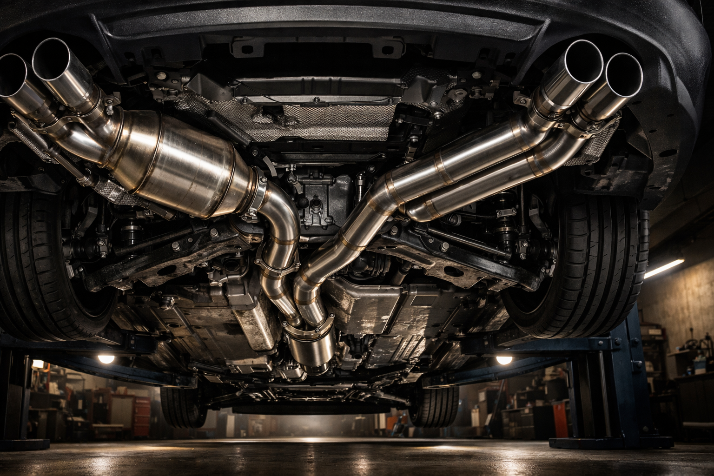
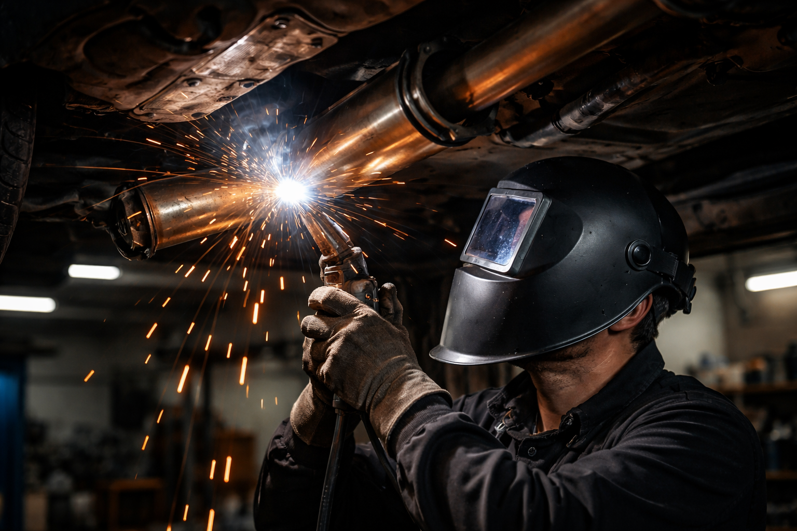

Réparation et remplacement de système d'échappement pour toutes marques. Silencieux, catalyseur, sonde lambda — Ali-Ka, votre garage de confiance depuis 22 ans.

Depuis janvier 2026, les diesel Euro 5 ne roulent plus dans Bruxelles. Pour les dizaines de milliers de véhicules encore autorisés, un échappement en bon état n'est plus un luxe — c'est une condition de circulation. Catalyseur encrassé, sonde lambda fatiguée, flexible percé : chaque maillon faible de la ligne d'échappement rapproche votre voiture d'un refus au contrôle technique ou, pire, d'une interdiction LEZ.
C'est dans ce contexte que Ali-Ka, Avenue des Casernes 10 à Etterbeek, intervient au quotidien. Silencieux, pot catalytique, sonde lambda, flexible, tube intermédiaire, collecteur : l'atelier diagnostique et répare l'intégralité de la ligne d'échappement, pièces de qualité à l'appui, sur toutes les marques du marché. On voit passer des pots rouillés de partout — et à chaque fois, le client pensait que c'était juste un petit bruit de rien.
Que vous veniez du quartier du Cinquantenaire à Etterbeek, des alentours de la Place Flagey à Ixelles, du haut de Schaerbeek ou des avenues résidentielles de Woluwe-Saint-Lambert, le garage est accessible en quelques minutes. Vingt-deux ans de pratique en mécanique automobile permettent à l'équipe de poser un diagnostic précis et de proposer l'intervention la plus adaptée — sans surcoût inutile.
Un problème d'échappement se manifeste rarement du jour au lendemain. Il envoie des signaux — encore faut-il savoir les lire. Voici les indices qui doivent déclencher une visite à l'atelier :
Ce qu'on voit souvent chez nous : un client vient pour « un petit bruit » et on découvre un flexible complètement percé. Ignorer ces alertes, c'est prendre un double risque. D'abord mécanique : un échappement percé laisse échapper des gaz toxiques et dégrade le rendement du moteur. Ensuite réglementaire : des émissions hors normes valent un refus sec au contrôle technique. Un diagnostic moteur chez Ali-Ka suffit à trancher rapidement — est-ce la sonde lambda, le catalyseur, ou un autre organe ?
Le chiffre fait réfléchir : en 2025, des milliers de véhicules ont été recalés au contrôle technique en Belgique pour émissions excessives. Catalyseur en fin de vie, sonde lambda déréglée, fuite sur un joint de collecteur — chaque défaut fait grimper les valeurs mesurées au-delà des seuils autorisés. Résultat : carte rouge et obligation de réparation sous délai.
Ali-Ka propose un contrôle préventif de la ligne d'échappement avant votre passage au CT. L'objectif est simple : détecter et corriger les anomalies en amont, plutôt que de les découvrir le jour J.
Par ailleurs, la zone de basses émissions (LEZ) de Bruxelles se durcit année après année. Un catalyseur fonctionnel et un échappement étanche ne sont plus optionnels — ils conditionnent votre droit de circuler dans la Région. Le calendrier LEZ prévoit de nouvelles restrictions pour les années à venir ; consultez LEZ.brussels pour vérifier où se situe votre véhicule. Si vous approchez des limites, sachez qu'une vidange régulière combinée à un entretien rigoureux du système d'échappement contribue à maintenir vos émissions au plus bas.
Concrètement, que fait-on chez Ali-Ka quand un client se présente avec un bruit suspect ou un voyant allumé ? L'équipe inspecte la ligne complète, du collecteur au silencieux arrière, puis établit un diagnostic clair. Les interventions courantes couvrent le remplacement du silencieux avant ou arrière, le changement du pot catalytique, la pose d'une nouvelle sonde lambda, la réparation ou le remplacement du flexible d'échappement, la soudure de tubes percés ainsi que le remplacement des colliers et supports de fixation.
Volkswagen, Renault, Peugeot, BMW, Mercedes, Audi, Toyota, Hyundai — l'atelier travaille sur toutes les marques. Bref, un seul garage, Avenue des Casernes 10 à Etterbeek, pour tout ce qui touche à l'échappement et à la mécanique. Pensez aussi à vérifier vos pneus — un pneu usé accroît la consommation et dégrade la tenue de route.
Les signes les plus courants sont un bruit anormal sous le véhicule, des vibrations, une odeur de gaz dans l'habitacle ou un voyant moteur allumé. Rendez-vous chez Ali-Ka à Etterbeek pour un contrôle rapide.
Le prix varie selon la pièce à remplacer : un flexible ou un silencieux coûte moins qu'un pot catalytique. Appelez le 02 647 47 01 pour un devis gratuit adapté à votre véhicule.
Le remplacement d'un silencieux ou d'un flexible prend 1 à 2 heures. Un pot catalytique peut nécessiter une demi-journée. Nous vous informons du délai exact avant chaque intervention.
Oui, un échappement défaillant entraîne des émissions excessives, ce qui est un motif de refus au CT en Belgique. Ali-Ka vérifie et répare votre échappement pour que votre véhicule passe le contrôle technique sans problème.
Depuis le 1er janvier 2026, les véhicules diesel Euro 5 (environ 2011-2015) ne sont plus autorisés dans la zone de basses émissions (LEZ) de Bruxelles. Un échappement en bon état et un filtre à particules fonctionnel restent essentiels pour les véhicules encore autorisés. Ali-Ka à Etterbeek contrôle vos émissions et entretient votre système d'échappement.